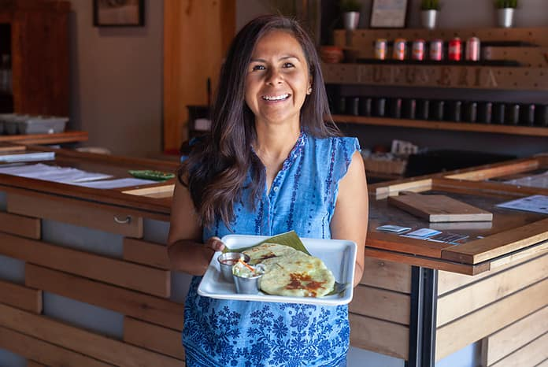

Our Story
Who We Are
Rooted in El Salvadoran culture, planted in Colorado Springs

Our Beginning
From El Salvador
to Colorado Springs
Monse's Taste of El Salvador opened its doors in January 2018 in the heart of Old Colorado City — a neighborhood known for its warmth, character, and community. What began as a dream to share the authentic flavors of El Salvador has grown into one of Colorado Springs' most beloved dining destinations.
"It's more than food… it's an experience."
We are a locally owned and operated small business, rooted in El Salvadoran culture. Everything on our menu is made from scratch, in-house — from the masa we press by hand for every pupusa to the curtido that ferments in our kitchen and the salsas we blend fresh each day.
We believe that food is one of the most powerful ways to share a culture. When you sit down at Monse's, we want you to feel the warmth and hospitality that defines El Salvadoran tradition. Every dish tells a story — and we are proud to tell it here in Colorado Springs.
One of Three Colorado Restaurants
Named to Yelp's Top 100
In 2019, Yelp recognized Monse's as one of the Top 100 Places to Eat in the United States — one of only three Colorado restaurants to receive this honor. We are humbled by this recognition and grateful to every guest who has made us their go-to spot for Salvadoran food.
What We Stand For
Our Commitments
100% Gluten Free
Our entire kitchen and menu is dedicated gluten-free. Recognized by the National Celiac Association, we provide a safe and delicious experience for those with celiac disease and gluten sensitivity.
Organic & Non-GMO
We source organic, all-natural, non-GMO ingredients because we believe what goes into your food matters. Our corn masa is 100% organic — made the way it has been for generations.
Locally Owned
We are a small, family-owned business proud to call Colorado Springs home. Every dollar spent here supports our community and the people who pour their hearts into this restaurant every day.
Made From Scratch
Nothing on our menu is pre-made or processed. Every pupusa is hand-pressed to order. Every sauce, every side, every drink — made fresh in our kitchen with the same love and care as a home-cooked meal.
Everyone's Welcome
With 14 pupusa fillings and multiple vegan options, there is truly something for everyone at our table — meat lovers, vegans, those with dietary restrictions, and curious first-timers alike.
Customer First
At Monse's, customer satisfaction is the utmost importance. We treat every guest like family — because that is what Salvadoran hospitality means to us.
Come See Us in
Old Colorado City
We'd love to share the flavors of El Salvador with you.